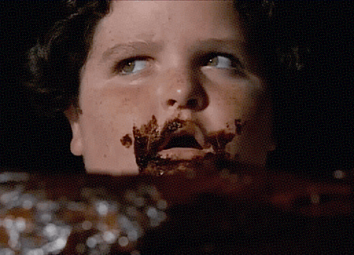

، كما هو منصوص عليه في اتفاقيات الهدنة الموقعة في عام ١٩٤٩، بعد حرب الاستقلال
، كما هو منصوص عليه في اتفاقيات الهدنة الموقعة في عام ١٩٤٩، بعد حرب الاستقلال وحرب الأيام الستة في عام ١٩٦٧
وحرب الأيام الستة في عام ١٩٦٧ . وقد أُعطي له اسمه
. وقد أُعطي له اسمه أنه في الخرائط المطبوعة أمام حرب الأيام الستة، كان يحمل علامة خضراء
أنه في الخرائط المطبوعة أمام حرب الأيام الستة، كان يحمل علامة خضراء . الأسماء المستعارة
. الأسماء المستعارة الإضافية للخط الأخضر هي ”الحدود ٤ يونيو ١٩٦٧" و ”الحدود ٦٧" و ”الحدود
الإضافية للخط الأخضر هي ”الحدود ٤ يونيو ١٩٦٧" و ”الحدود ٦٧" و ”الحدود ٤٨".
٤٨".
عكست حدود إسرائيل قبل عام ١٩٦٧ تحليل القوات الإسرائيلية والعربية
 في أعقاب اتفاقات الهدنة بعد حرب الاستقلال
في أعقاب اتفاقات الهدنة بعد حرب الاستقلال . ولم يكن رسمياً خطاً حدودياً، بل كان فصلاً بين القوات بين إسرائيل والدول المجاورة. وتستخدم غالبية الخط الأخضر
. ولم يكن رسمياً خطاً حدودياً، بل كان فصلاً بين القوات بين إسرائيل والدول المجاورة. وتستخدم غالبية الخط الأخضر اليوم كحدود إدارية بين الأراضي المحتلة وسيادة إسرائيل، والمناطق التي تديرها الحكومة العسكرية أو بموجب اتفاقات مع السلطة الفلسطينية
اليوم كحدود إدارية بين الأراضي المحتلة وسيادة إسرائيل، والمناطق التي تديرها الحكومة العسكرية أو بموجب اتفاقات مع السلطة الفلسطينية . فعلى سبيل المثال، في اتفاق تعاون تم توقيعه بين منظمة ماغن دافيد أدوم والهلال الأحمر الفلسطيني، في كانون الأول/ديسمبر ٢٠٠٥، تم تصميم الخط الأخضر على تحديد الحدود بين مناطق النشاط الجغرافي للمنظمات.
. فعلى سبيل المثال، في اتفاق تعاون تم توقيعه بين منظمة ماغن دافيد أدوم والهلال الأحمر الفلسطيني، في كانون الأول/ديسمبر ٢٠٠٥، تم تصميم الخط الأخضر على تحديد الحدود بين مناطق النشاط الجغرافي للمنظمات.
كان الخط الأخضر يدور حول ٧٨٪ من الجانب الغربي
 من الانتداب البريطاني
من الانتداب البريطاني الذي بدأ من عام ١٩٢٢ لم يعد يشمل معبر شرق الأردن. كان لديه حدود منطقة الانتداب مع سوريا ولبنان، وغالبية الحدود مع مصر، والحدود مع الأردن في أرافة وطيرات زفي، وإلى حامات جادر. احتل الأردن جزءا ً كبيراً من المنطقة الجبلية
الذي بدأ من عام ١٩٢٢ لم يعد يشمل معبر شرق الأردن. كان لديه حدود منطقة الانتداب مع سوريا ولبنان، وغالبية الحدود مع مصر، والحدود مع الأردن في أرافة وطيرات زفي، وإلى حامات جادر. احتل الأردن جزءا ً كبيراً من المنطقة الجبلية في وسط البلد
في وسط البلد في عام ١٩٤٨. وقد ضم الأردن و"الضفة الغربية
في عام ١٩٤٨. وقد ضم الأردن و"الضفة الغربية " هذه المنطقة إلى الغرب من نهر الأردن
" هذه المنطقة إلى الغرب من نهر الأردن لتمييزها عن بقية المملكة الأردنية الهاشمية التي وجدت شرق نهر الأردن. في إسرائيل كانت تسمى المنطقة "يهودا والسامرة". نُقل شريط ضيق على طول شاطئ
لتمييزها عن بقية المملكة الأردنية الهاشمية التي وجدت شرق نهر الأردن. في إسرائيل كانت تسمى المنطقة "يهودا والسامرة". نُقل شريط ضيق على طول شاطئ الساحلي الجنوبي إلى السيطرة العسكرية المصرية، وأطلق عليه اسم "قطاع غزة".
الساحلي الجنوبي إلى السيطرة العسكرية المصرية، وأطلق عليه اسم "قطاع غزة".
 , עם ירדן, עם סוריה ועם
, עם ירדן, עם סוריה ועם  , כפי שנקבע בהסכמי שביתת הנשק שנחתמו בשנת 1949, לאחר
, כפי שנקבע בהסכמי שביתת הנשק שנחתמו בשנת 1949, לאחר  ועד מלחמת ששת הימים בשנת
ועד מלחמת ששת הימים בשנת  .
.  ניתן לו מכך שבמפות המודפסות שלפני מלחמת ששת הימים, הוא סומן ב
ניתן לו מכך שבמפות המודפסות שלפני מלחמת ששת הימים, הוא סומן ב .
.
 לקו הירוק הם "גבולות 4 ביוני 1967", "גבולות 67" וגם "גבולות 48“.
לקו הירוק הם "גבולות 4 ביוני 1967", "גבולות 67" וגם "גבולות 48“.
 לאחר מלחמת
לאחר מלחמת  . רשמית לא היה זה קו גבול אלא קו הפרדת הכוחות בין ישראל לשכנותיה. רוב חלקי הקו הירוק משמשים היום כגבול מינהלי בין השטחים עליהם חלה ריבונות ישראל, לבין שטחים המנוהלים על-ידה באמצעות ממשל צבאי או על-פי הסכמים עם הרשות הפלסטינית. לדוגמה, בהסכם ל
. רשמית לא היה זה קו גבול אלא קו הפרדת הכוחות בין ישראל לשכנותיה. רוב חלקי הקו הירוק משמשים היום כגבול מינהלי בין השטחים עליהם חלה ריבונות ישראל, לבין שטחים המנוהלים על-ידה באמצעות ממשל צבאי או על-פי הסכמים עם הרשות הפלסטינית. לדוגמה, בהסכם ל שנחתם בין ארגון מגן דוד אדום ומקבילו הסהר האדום הפלסטיני בדצמבר 2005 נקבע כי הקו הירוק יגדיר את הגבול בין תחומי הפעילות הגאוגרפיים של הארגונים.
שנחתם בין ארגון מגן דוד אדום ומקבילו הסהר האדום הפלסטיני בדצמבר 2005 נקבע כי הקו הירוק יגדיר את הגבול בין תחומי הפעילות הגאוגרפיים של הארגונים.
 מ
מ של
של  שהחל מ-1922 כבר לא כלל את עבר הירדן המזרחי. הוא חפף פחות או יותר את הגבול של שטח המנדט עם סוריה ולבנון, את רוב הגבול עם
שהחל מ-1922 כבר לא כלל את עבר הירדן המזרחי. הוא חפף פחות או יותר את הגבול של שטח המנדט עם סוריה ולבנון, את רוב הגבול עם  , ואת הגבול עם ירדן בערבה ומטירת צבי ועד חמת גדר. חלק גדול מאזור ההר ב
, ואת הגבול עם ירדן בערבה ומטירת צבי ועד חמת גדר. חלק גדול מאזור ההר ב נכבש על ידי ירדן ב-1948. שטח זה סופח על ידי ירדן וכונה "הגדה המערבית", כלומר, השטח שממערב לנהר הירדן, כדי להבדילו מיתר ממלכת ירדן דאז שנמצאה ממזרח ל
נכבש על ידי ירדן ב-1948. שטח זה סופח על ידי ירדן וכונה "הגדה המערבית", כלומר, השטח שממערב לנהר הירדן, כדי להבדילו מיתר ממלכת ירדן דאז שנמצאה ממזרח ל . בישראל השטח נקרא "יהודה ושומרון". רצועה צרה לאורך מישור ה
. בישראל השטח נקרא "יהודה ושומרון". רצועה צרה לאורך מישור ה הדרומי עברה לשליטה צבאית מצרית, וכונתה "רצועת עזה".
הדרומי עברה לשליטה צבאית מצרית, וכונתה "רצועת עזה".